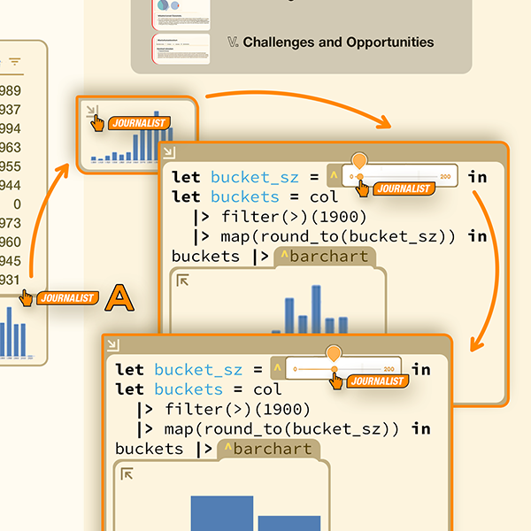
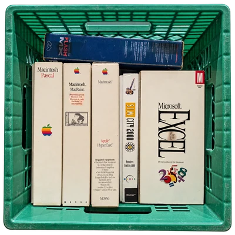
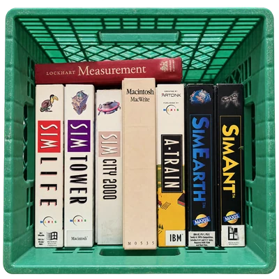
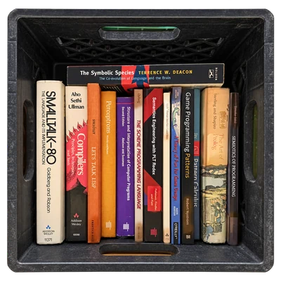
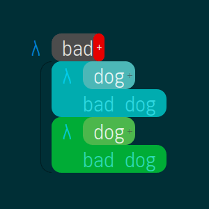
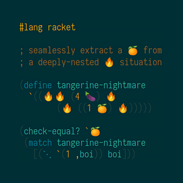
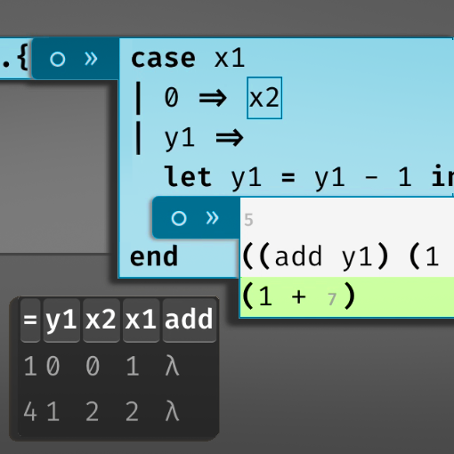
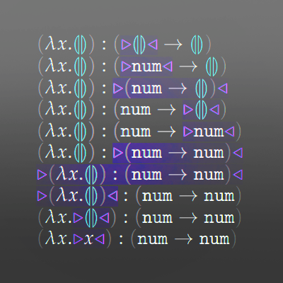

PL 🟰 UI
I use programming language theory to explore & explain user interfaces,
making engagement with abstractions more tangible and more fun
Can we make GUIs that compose like languages?
Create languages made of GUIs?
Can malleable semantic interfaces help make code a thing you can dip your feet in?
Language servers can provide semantic contextualization and guidance to inform
helpful editing affordances for both people and language models:
LLMs need IDEs
Math needs juice.
Working on tactile affordances to support the development of
mechanical sympathy in the manipulation of materials with mechanized semantics
- November 2026
- In NYC
- November 2026
- Presented Declarative Dragging (Best Paper) at UIST 2026 in Detroit with Joshua Horowitz
- October 2026
- Attended SPLASH 2026 in Oakland
- September 2026
- Demoed the Hazel agent canvas remotely at the ARIA Safeguarded AI workshop in London
- July 2026
- In SF
- June 2026
- Attended OPLSS 2026 in Eugene, Oregon
- May 2026
- On the program committees for LIVE 2026 and HATRA 2026
- April 2026
-
In London for an ARIA Safeguarded AI workshop and two weeks of co-working.
Cambridge side trip to hang out with Anil Madhavapeddy - Dec 2025
-
Formed thesis committee and presented thesis proposal, tentatively titled
Structured Semantic Context for Programming Processes (slides) - Dec 2025
- Visited Toronto and Calgary; met up with Ivy Reese and Elliot Evans at the Calgary Zoo
- Nov 2025
- In Edinburgh for an ARIA Safeguarded AI workshop, then visiting Helsinki
- Sep 2025
-
Our paper Syntactic Completions with Material Obligations
(David Moon, Andrew Blinn, Thomas J. Porter, Cyrus Omar) accepted at OOPSLA 2025 - Aug 2025
-
In Bristol for an ARIA Safeguarded AI workshop,
then London for the Ink & Switch Social at the TLDraw office - Jul 2025
-
Now a co-investigator along with Cyrus Omar on an ARIA grant to develop
a scaffolding platform for safeguarded AI - May 2025
- On the program committees for LIVE 2025 and HATRA 2025
- Feb 2025
- Chatted about Hazel along with Cyrus on the Dead Code podcast
- Jan 2025
- Presented work in progress on Hazelcards at a future of coding virtual meetup
- Oct 2024
-
In LA for SPLASH 2024, including HATRA,
LIVE, Onward!,
and the Ink & Switch Unconf;
spoke about Typed Holes for LLMs: Recorded Talk, Slides - Sep 2024
-
In Vancouver en route to Gradient with Marcel,
Elliot, and Ivy
(and surprise guests Devine and PVH) - Aug 2024
-
Our paper Statically Contextualizing Large Language Models with Typed Holes
(Andrew Blinn, Kevin Xiang Li, June Hyung Kim, Cyrus Omar) accepted at OOPSLA 2024 - May 2024
- On the program committees for LIVE, HATRA, and Onward! at SPLASH 2024
- Jan 2024
-
Distinguished paper award Total Type Error Localization and Recovery with Holes
(POPL2024)
(Eric Zhao, Raef Maroof, Anand Dukkipati, Andrew Blinn, Zoe Pan, Cyrus Omar) - Jan 2024
- Our paper Toward a Live, Rich, Composable, and Collaborative Planetary Compute Engine accepted at PROPL @ POPL24 (Alexander Bandukwala, Andrew Blinn, Cyrus Omar)
- Dec 2023
- Guest lectured on macros in Racket for EECS490 again: Talk
- Oct 2023
-
Our paper Gradual Structure Editing with Obligations accepted at VL/HCC23
(David Moon, Andrew Blinn, Cyrus Omar) - Oct 2023
- Spoke about type-directed prompt construction for LLM code completion
at the 2023 Midwest PL Summit: Slides - Sep 2023
-
Joined the Train Jam on the Empire Builder line from Seattle to St. Louis
for the final Strange Loop and the first Local First Unconf - Sep 2023
- Third year TAing EECS490
- May 2023
- Mastered (Computer) Science at the University of Michigan. Presented work on formalizing programming assistants, passed preliminary exam, and advanced to PhD candidacy
- Apr 2023
-
In Toronto for Causal Islands and then Galiano via Vancouver to work on nool
at Gradient Retreat (feat. Omar, Max, and Ian) - Sep 2022
-
Our paper Tylr - A Tiny Tile-based Structure Editor accepted to TyDe workshop
(David Moon, Andrew Blinn, Cyrus Omar) - Sep 2022
- Spoke about programming assistant architecture at VLHCC22 in Rome
- Sep 2022
- TAing EECS490 again
- May 2022
- An Integrative Human-Centered Architecture for Interactive Programming Assistants accepted at VLHCC22 (Andrew Blinn, David Moon, Eric Griffis, Cyrus Omar)
- Dec 2021
- Guest lectured on macros in Racket for EECS490: Talk
- Oct 2021
- Student volunteering at SPLASH/OOPSLA in Chicago; attended HATRA and LIVE workshops
- Sep 2021
- TAing EECS490, Michigan's programming languages course
- Jun 2021
-
Our paper Filling typed holes with live GUIs accepted at
PLDI21
(Cyrus Omar, David Moon, Andrew Blinn, Ian Voysey, Nick Collins, Ravi Chugh) - Feb 2021
-
In Vancouver en route to work on furl at Gradient Retreat
(feat. Omar, Toph, Horace, and Robert) - Dec 2020
- Class project hybridizing Hazel with the Smyth program synthesizer: Report
- Aug 2020
- Started a PhD at the University of Michigan, joining Cyrus Omar's Future of Programming Lab
- Aug 2020
- Wrapped up at TodaQ with a project on interfaces for reifying digital stuff
- Apr 2020
- Accepted a PhD offer from the University of Michigan
- Mar 2020
- At UChicago for PhD visit day; remote visit day at Michigan
- July 2019
-
Invited to present Fructure at RacketCon 2019:
Talk, Slides;
attended Racket's How to Design Languages Summer School - May 2019
- Started work at TodaQ Toronto
- May 2019
- Graduated the University of Toronto with an HBSc in Computer Science & Mathematics
- April 2019
- Attended Clojure North in Toronto
- Apr 2019
-
Research with Ramy Shahin and Marsha Chechik
on variability-aware data structures in Haskell,
including SpyShare, a tool for visualizing sharing: Report - Jan 2019
- TAing CSC324 for a fourth term
- Sep 2018
- St. Louis triple header: Attending ICFP2018 (PLMW scholarship), Strange Loop 2018, RacketCon 2018
- Sep 2018
- Back to TAing CSC324 and CSC104
- July 2018
- At the Oregon Programming Languages Summer School in Eugene
- Jun 2018
- Hired to design assignments for CSC324, including a mini algebraic stepper and a pattern matching language
- Sep 2017
- Started TAing CSC324 and CSC104, through Winter 2018
- May 2017
- Independent study on structured editing with Gary Baumgartner, which grew into Fructure
- Jan 2017
- Took CSC324 and switched from math to CS
- Sep 2016
- Co-organized a category theory reading group; first encountered FP via Haskell



Here's some other things i've worked on:
fructure
a structured interaction engine
fructure is a prototype for an extensible structured editing engine, built around a ui for composing term-rewriting edit actions. editing abstractions like cursors and code-folding are reinterpreted as syntactic scaffolding in a meta-grammar of syntactic affordances

context patterns
capture contexts with racket/match
a library of custom pattern combinators for racket/match which generalize macro-by-example ellipses patterns. these use composable continuations to descend into arbitrary nested structures and capture both matches and their surrounding contexts

depthop
an sdf raymarcher in c++
a simple cpu raymarcher parallelized with open MP, implementing constructive solid geometry, soft shadows, ambient occlusion, blinn-phong shading, and perlin noise

december 2020figuring out new ways for you to fight with your editor, hybridizing hazel with the smyth program synthesizer

september 2020joined cyrus omar's fp lab as a phd student at the u of m, helping ruin programming forever
ended two years owning ownership at todaq with a project on making interfaces for reifying fake digital stuff